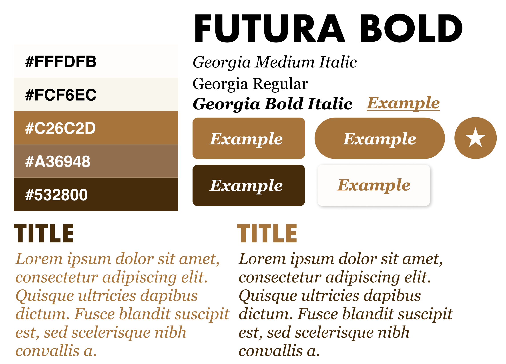

Scripting for IDM II - Case Study
Overview
For my final project, I created a recipe site using PHP, mySQL, and CSS. It was built in three phases over the course of Autumn 2021, starting with an Alpha where I created the the template pages for the project, followed up with the Beta where I added in the basic functions, and concluded with the final where I added in the more complex functions while also tweaking the visuals a bit. The result was a simple, fully responsive website that allowed users to browse and update the contents of the database with a clean, easy to use interface.
Context and Challenges
I built this recipe book as a final project for a scripting class taken late 2021. Over the course of ten weeks, I needed to build a PHP-based website that used a mySQL database to dynamically update the content on each page. In addition, I also needed to create a few "admin pages" that allowed you to create, update, and delete any given database entry through the website itself. Going into this project, my main goal was to learn the basics of PHP and MySQL and to pass my class. Prior to this, I had no experience in either subject, making the early stages fairly difficult to get through.
Process and Insights
The process of building this website can be broken down into three stages: the Alpha build, the Beta build, and the Final build.
During the Alpha, my goal was to create basic templates that I would use throughout every page in the project. While designing these pages, my intention was to keep the HTML simple in construction while relying more on the CSS to give it a strong visual identity. My reasoning behind this was that I needed the pages to easy to revisit while working with them in PHP, but also not too boring to look at when presenting it. For my styles, I chose a visual design that was reminiscent of an old cookbook - giving a warm, nostalgic charm.

I creted the basic prototypes in Figma, but I quickly entered the building phase since I was on a tight deadline to get the Alpha's done.
Along the way, I also added in a few PHP-based enhancements to help speed up the process – such as when I needed to reuse a bit of HTML to have a nav-bar on the top of each page.
In the Beta phase, most of my process was focused on building out the functions of the website while also incorperating MySQL databases. Since this was my first time using the language I kept my tables simple, and cut down on features that seemed a bit to complex for me to handle at this stage – such as having multiple fields for different steps in recipes or allowing for file uploads. My main goal was to get all of the basic features of the Admin pages put in place, since those ones were the most crucial. I started with the creation page because I figured that it would make for a decent "base" script to pull from when developing the rest of the site, and from there I was able to figure out updating and deleting database entries. The one thing I struggled with when developing the beta was learning how to update website content using GET requests instead of POST requests, so for the beta I used the recipe listing page as a stealthy way to get the view recipe page working with a POST request form.
This would, of course, change by the time I built my final where I added in proper GET requests into the project while also building out the feature set I finally got around to adding in a proper file upload system at this stage, and created the basic functions in the normal website – such as a functioning search and category listing page. This was also around this time that I finally got to around to adding in the logos and asset images into the project – a step which I put off due to my focus on developing the functions of the website instead.
The Solution
You can view my final build here.
The final product is a fully functioning recipe site that allows users to read the various recipes stored in the database. Most visitors will visit the Search page, which allows users to find entries based on the name of the dish, and the Browse page which allows them to view by meals of the day. On the administrative side, there is a recipe listing page – which allows the user to see all of the recipes stored in the database – and several pages/functions that allow the user to add new recipes, edit old ones, delete entries, and view current ones. All pages are fully responsive, and work on mobile, tablet, and desktop interfaces.
The Results
Overall, I felt that this project was definitely following a "function over form" philosophy with it's greater emphasis on writing the script over designing the visuals of the website. This was one of the tougher projects I had to work on this year, and so I feel proud to have finished it but wished I could have known a bit more to add in something more complex. I will definitely need to practice with the langauge a bit more before I become 100% comfortable with it, but fow now I think I got the basics nailed down. As for my goal of passing the class, I currently don't know what I earned on my project yet, so I'll update this case study later with the results. Overall, this was a challenge to build but very rewarding to complete.